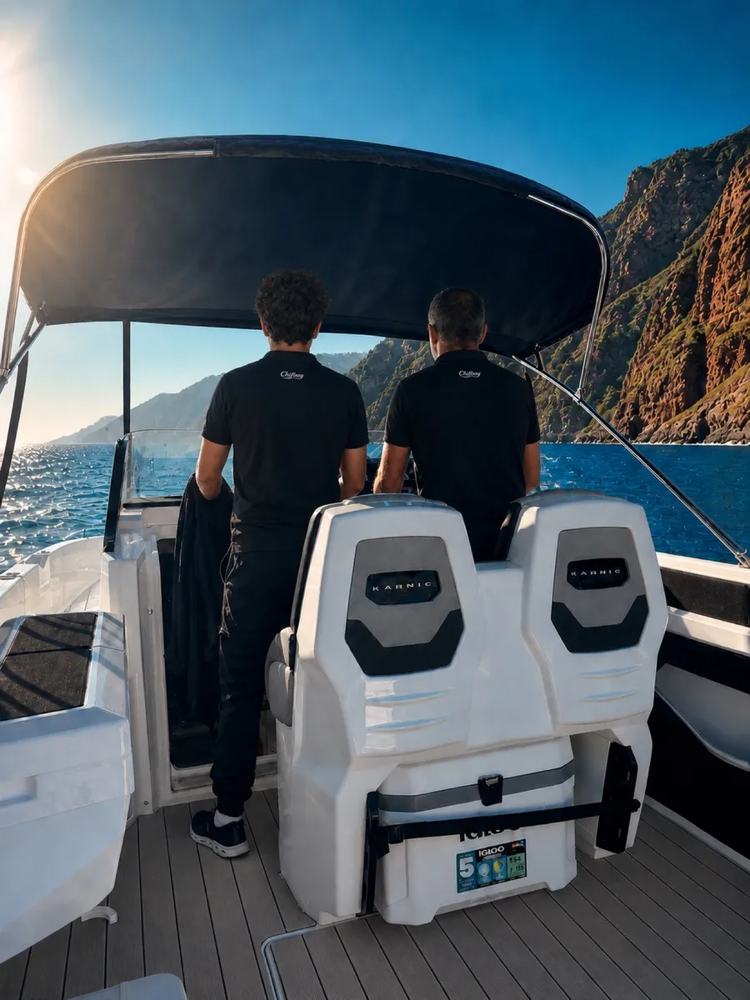

Barreiros, Funchal · Guest favourite
Perla do Oceano Suite
Funchal sea view with an XL terrace.
3 guests · 2 bedrooms · 1 bathroom · 7 nights minimum
4.96 on Airbnb · 33 reviews on 3 sites
from €115 a night, no service fee

Perla do Oceano in Barreiros and Varanda do Sol over Praia Formosa. Two bedrooms each, room for three, and booked here for less than on Airbnb.
Barreiros, Funchal · Guest favourite
Funchal sea view with an XL terrace.
3 guests · 2 bedrooms · 1 bathroom · 7 nights minimum
4.96 on Airbnb · 33 reviews on 3 sites
from €115 a night, no service fee


Above Praia Formosa, Funchal · Superhost
A private terrace above Praia Formosa.
3 guests · 2 bedrooms · 1 bathroom · 7 nights minimum
4.89 on Airbnb · 23 reviews on 3 sites
from €165 a night, no service fee
On Airbnb, Booking.com and Vrbo, after they left. Nothing is edited, low scores included; reviews in other languages show an English translation with the guest's own words one tap away.
Peaceful, clean, luxurious and relaxing. Couldnt have asked for a better place to stay. Made our visit to madeira feel comfortable and relaxed. Will be coming again! Thank you!
A lovely base from which to explore Madeira, good Funchal bus service, natural pool and restaurant/supermarket access.
A peaceful place to retreat to after days out, sit on the terrace and listen to the waves crashing on the beach below.
Perfect stay
The apartment is amazing and very well-equipped; you truly have everything you need. The hosts were great as well, with very fast and easy communication. The terrace is beyond beautiful. The location is excellent—really close to the city center, yet you still have your own peaceful spot near the beach. There are plenty of markets and restaurants around, and if we ever come back to Madeira, we would definitely stay here again.
Less good: Everything was great.
Thank you so much for your wonderful feedback. It truly makes us happy to hear that your stay was perfect and that you enjoyed the apartment, the terrace, and the neighborhood.
You were fantastic guests, and communicating with you was really easy.
If you ever come back to Madeira, we’d be delighted to welcome you again.
Natalia & Hugo
Great place to stay, overlooking the entire bay, we saw the most beautiful New Year's Eve fireworks here!
很棒的住宿，可以俯瞰整个海湾，我们在这里看到了最美的跨年烟花！
The property was as described, very clean and comfortable. Kitchen had everything we needed, we were there for 2 weeks and cooked in a few times. Natalia was always quick to respond to our enquires. There is a convenience store right by the apartment and other shops about 15 mins walk. The buses are really easy to use and stops about 2 minutes walk from the building. The views are fantastic from the terrace and balcony.
Really nice place to stay and a super friendly host. Great location with lots of restaurants nearby, a lovely terrace, and easy private parking. We’d definitely stay here again!
Room for loungers and a table, facing the water. It is where the evenings go.
Tell us when you land. Natalia and Hugo hand over the keys in person and show you how everything works.
Perla do Oceano Suite is 164578/AL, Varanda do Sol Suite is 164601/AL. Both are registered Alojamento Local.

Chifbay is our private boat out of Marina do Funchal, a few minutes from either flat. One group at a time, never shared, with the same two skippers on board. Rated 5.0 across every verified trip.
Here, on this site. Pick your dates on the apartment page and pay by card through Stripe. The calendar shows what is actually free: it reads the same availability as Airbnb, Vrbo and Booking, so a night sold anywhere is closed everywhere.
Yes, twice over. The nightly rate here is lower, and there is no Airbnb service fee on top.
Three in each apartment. Both have two bedrooms, two beds and one bathroom.
Varanda do Sol comes with free parking on site. Perla do Oceano has free street parking nearby.
Natalia and Hugo, who live in Funchal. Both flats are Superhost-run on Airbnb, and you are met at the door on arrival.
No. Neither apartment has one, and both listings say so. We would rather write it here than leave you to find it in the small print.